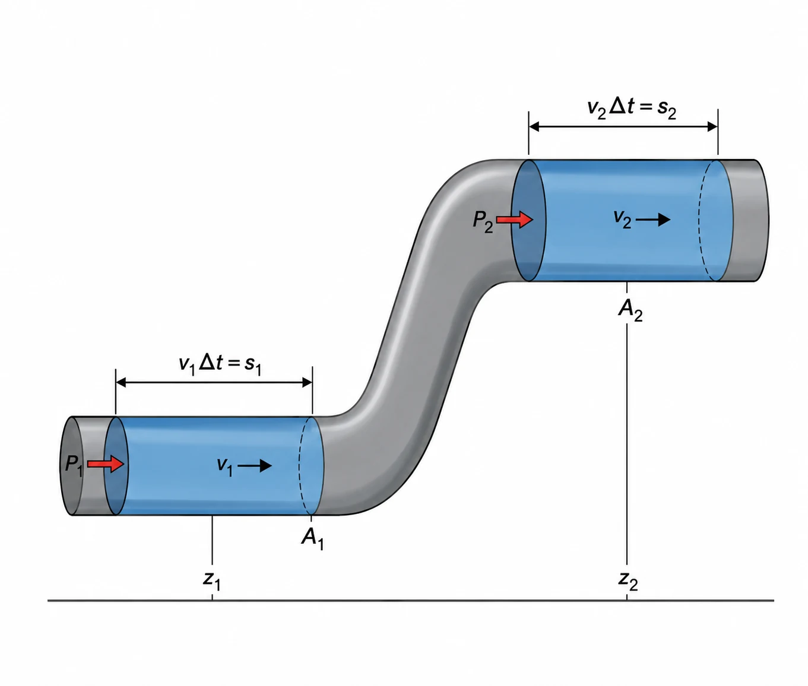
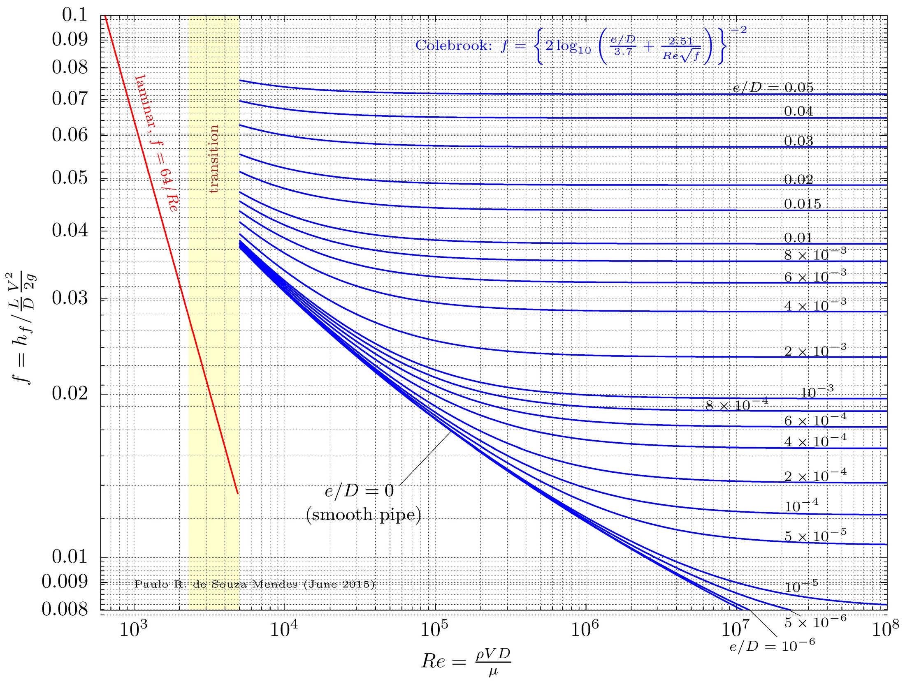
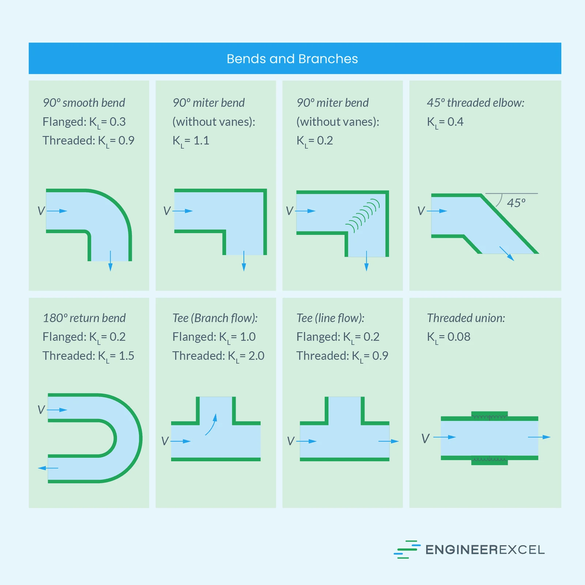
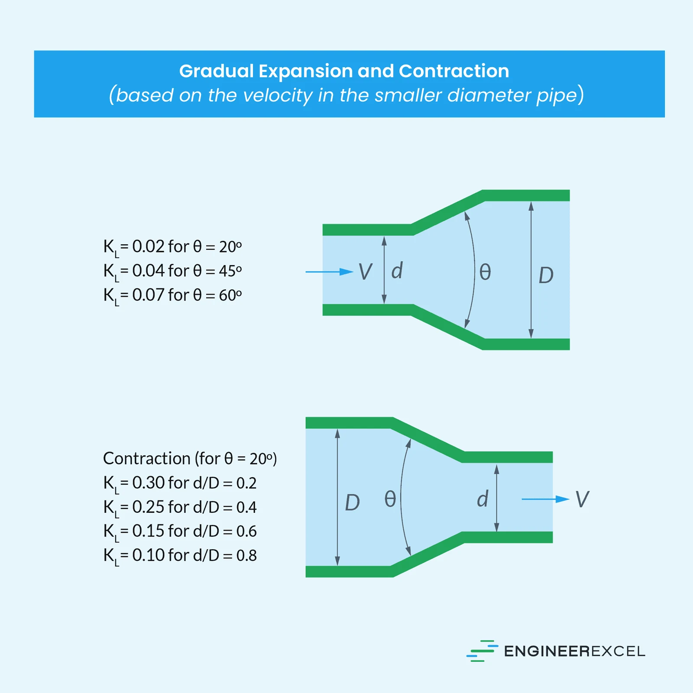
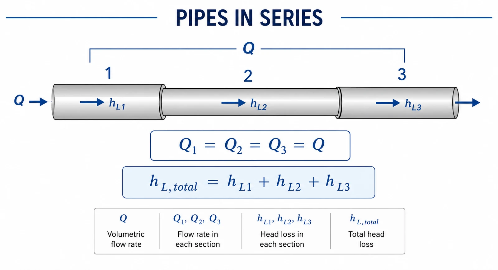
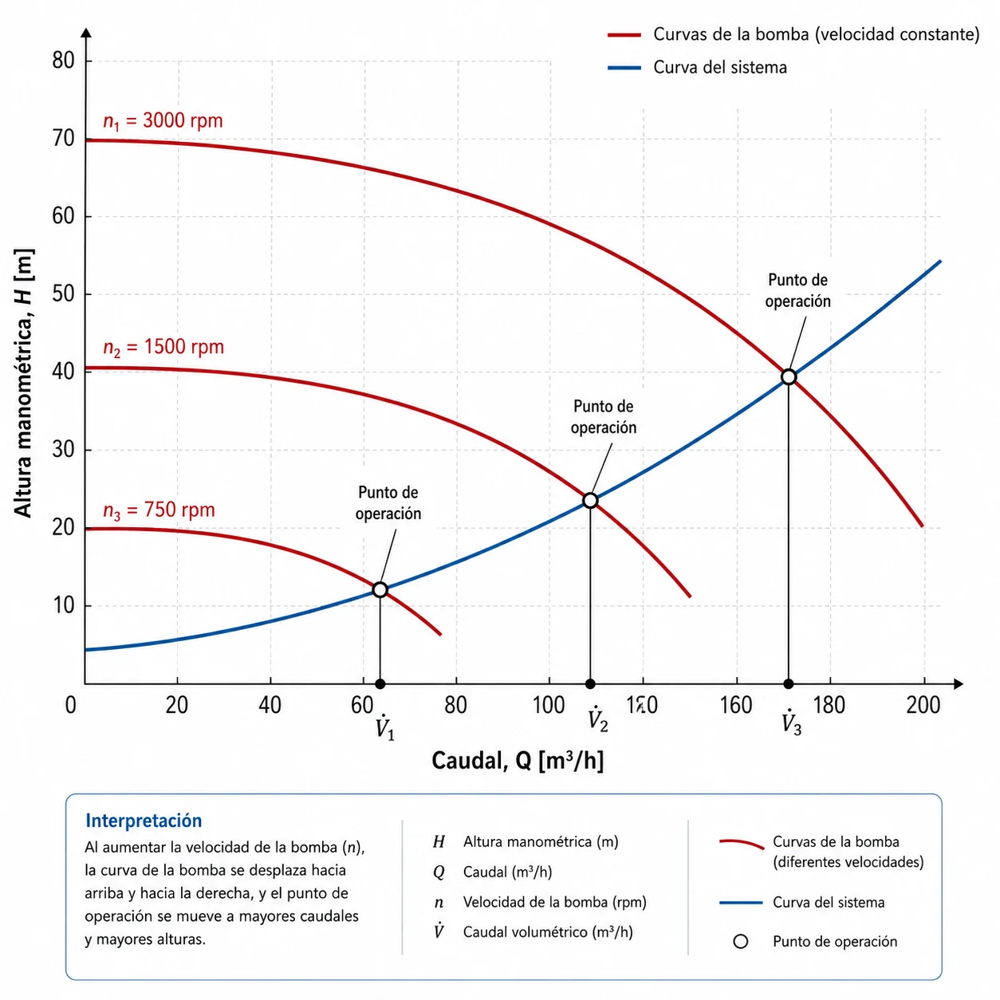
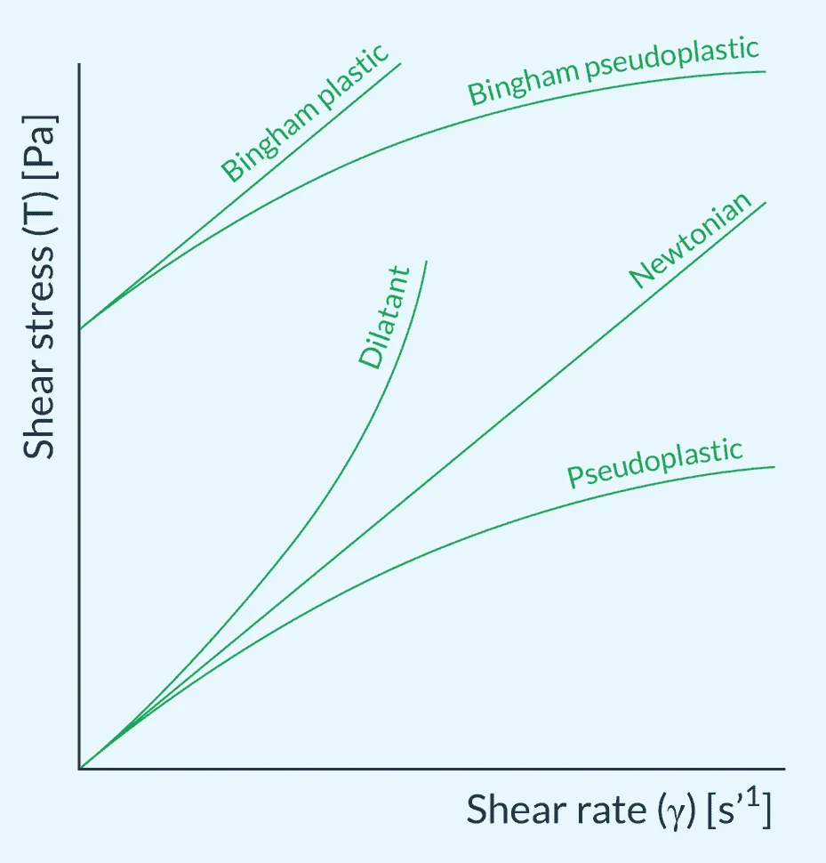
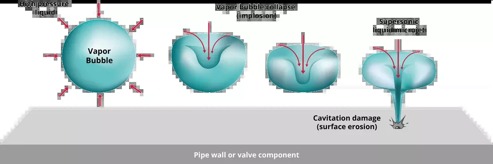

Flujo de fluidos
Balance de energía mecánica, pérdidas en tuberías, redes en serie y paralelo, diseño práctico y desafíos especiales.
De la ecuación de Bernoulli al diseño de redes
- 01FundamentosEcuación de Bernoulli, conservación de energía mecánica y conceptos clave de flujo.
- 02Sistemas de tuberíasPérdidas mayores y menores, fricción, diagrama de Moody y redes en serie y paralelo.
- 03Diseño prácticoVelocidades económicas, selección de diámetros comerciales y materiales.
- 04Desafíos especialesFluidos no-newtonianos, cavitación y golpe de ariete.
Este conocimiento es fundamental para su proyecto de producción de alcohol: diseñarán sistemas para transportar mosto, vinaza, alcohol caliente y agua de servicios, cada uno con características de flujo únicas.
Verificación de conceptos fundamentales
Energía por unidad de peso
- Energía de presión: $P/\rho g$
- Energía cinética: $v^2/2g$
- Energía potencial: $z$
Todas se expresan en metros (m): son «cabezales» o «alturas» de energía.
Número de Reynolds
- Laminar: $Re < 2300$
- Transición: $2300 < Re < 4000$
- Turbulento: $Re > 4000$
Dos categorías
- Mayores: fricción a lo largo de los tubos rectos.
- Menores: accesorios, válvulas y cambios de sección.
- Ambas dependen del factor de fricción $f$.
Estos conceptos son la base para todo el diseño de sistemas de fluidos que realizarán en su proyecto. Si alguno no está claro, este es el momento de repasarlo.
Fundamentos
El balance de energía mecánica gobierna todo el transporte de fluidos. Dominar Bernoulli es dominar el resto del curso.
La ecuación de Bernoulli
Significado físico de cada término:
- $P/\rho g$ — altura de presión (m)
- $v^2/2g$ — altura de velocidad (m)
- $z$ — altura de elevación (m)
- $H$ — carga total o energía mecánica total (m)
La ecuación representa la energía mecánica total por unidad de peso, que permanece constante a lo largo de una línea de corriente en ausencia de fricción y trabajo externo.
VÁLIDA SOLO SI…
Flujo estacionario, incompresible, sin fricción y sin máquinas (bombas/turbinas) entre los puntos 1 y 2. Es el caso ideal: el punto de partida que luego corregiremos.

El balance de energía entre dos secciones de la tubería: presión, velocidad y elevación se intercambian entre sí.
Interpretación física
La energía total se conserva, pero los términos se convierten unos en otros:
Si la velocidad aumenta (por continuidad), la presión debe disminuir para mantener $H$ constante.
A diámetro constante, si la altura aumenta la presión disminuye.
La altura de presión se convierte en velocidad (Torricelli).

El estrechamiento calibrado ($A_1 \to A_2$) acelera el fluido; el manómetro mide la caída de presión $\Delta P$ asociada.
Medidor Venturi
El estrechamiento calibrado permite medir el caudal a partir de la diferencia de presión:
- $C_d$ = coeficiente de descarga (0.95–0.98 en Venturi)
- $A_1, A_2$ = áreas de la sección ancha y la garganta
- $\Delta P$ = caída de presión medida
EN SU PROYECTO
Estimar velocidades de descarga de tanques, diseñar trasiego por gravedad entre niveles y dimensionar preliminarmente líneas antes de incluir las pérdidas.
Bernoulli modificado: bombas y fricción
El mundo real tiene fricción y a menudo necesita bombas. Se añaden dos términos:
- $h_p$ = altura añadida por la bomba (m)
- $h_L$ = altura perdida por fricción y accesorios (m)
Reorganizando para la altura de bomba requerida:
CADA TÉRMINO TIENE UN SIGNIFICADO FÍSICO
La bomba debe vencer cuatro demandas simultáneas:
Sistemas de tuberías
Cómo se calculan las pérdidas reales y cómo se comportan las tuberías cuando se conectan en serie y en paralelo.
Pérdidas por fricción — Darcy-Weisbach
Parámetros clave:
- $f$ = factor de fricción de Darcy (adimensional)
- $L$ = longitud de la tubería (m)
- $D$ = diámetro interno (m)
- $v$ = velocidad promedio del flujo (m/s)
SENSIBILIDAD A LOS PARÁMETROS
$P_{\text{pérdida}} \propto L$ — lineal con la longitud.
$P_{\text{pérdida}} \propto v^2$ — cuadrática con la velocidad.
$P_{\text{pérdida}} \propto 1/D^5$ — a caudal volumétrico constante.
Doblar el diámetro reduce las pérdidas 32 veces ($2^5$) a igual caudal. El diámetro es, de lejos, la variable de diseño más poderosa.
Factor de fricción según el régimen
Solución exacta
Independiente de la rugosidad: en flujo laminar las capas de fluido deslizan ordenadamente y la pared «no se siente». Solución analítica exacta.
Depende de $Re$ y $\varepsilon/D$
Aproximación de Blasius para tubería lisa ($Re \lesssim 10^5$). Cuando la rugosidad importa, se requiere Colebrook o el diagrama de Moody.
La zona de transición ($2300 < Re < 4000$) es inestable e impredecible: el flujo alterna entre laminar y turbulento. Se debe evitar en el diseño — opere claramente en un régimen o en el otro.

El Diagrama de Moody — las cuatro zonas
Línea recta
$f = 64/Re$ hasta $Re = 2300$. Flujo ordenado, capas que deslizan suavemente.
Inestable
$2300 < Re < 4000$. Región impredecible que debe evitarse en el diseño.
$f$ depende de $Re$ y $\varepsilon/D$
Las curvas descienden suavemente a medida que aumenta $Re$.
$f$ solo función de $\varepsilon/D$
$f$ independiente de $Re$: líneas horizontales en el diagrama.
RUGOSIDAD TÍPICA ($\varepsilon$)
Acero comercial nuevo: 0.045 mm · Galvanizado: 0.15 mm · Concreto: 1–3 mm · Acero oxidado: 1–5 mm. La rugosidad relativa $\varepsilon/D$ es lo que entra al diagrama.
Ecuación de Colebrook
- Ecuación implícita: $f$ aparece en ambos lados.
- Requiere solución iterativa.
- Describe todo el régimen turbulento.
- Unifica los datos experimentales de Nikuradse — es la base matemática del diagrama de Moody.
MÉTODO DE SOLUCIÓN
1. Comenzar con una aproximación inicial de $f$.
2. Sustituir en el lado derecho.
3. Calcular un nuevo $f$.
4. Repetir hasta convergencia.
Típicamente 3–5 iteraciones bastan para $|f_{n+1} - f_n| < 0.0001$.
Correlaciones explícitas modernas
Swamee-Jain (1976)
Haaland (1983)
EJEMPLO PRÁCTICO
Para $Re = 10^5$ y $\varepsilon/D = 0.001$, Swamee-Jain da:
Comparación con el diagrama de Moody (Colebrook): $\approx 0.0222$. La diferencia es despreciable para ingeniería.
Estas correlaciones explícitas dan $f$ directamente, sin iterar: ideales para implementar en una hoja de cálculo o en un script de diseño de su proyecto.
Accesorios, válvulas y cambios de sección
- $K$ = coeficiente de pérdida del accesorio (adimensional)
- $v$ = velocidad en la tubería (m/s)
MECANISMO FÍSICO
Los accesorios causan separación del flujo, formación de remolinos y re-aceleración, disipando energía como calor.
NO SIEMPRE SON «MENORES»
Para un sistema típico, la suma $\Sigma K$ puede llegar a 50, equivalente a cientos de metros de tubería recta. En plantas compactas con muchos accesorios, las pérdidas menores pueden superar a las mayores.
Catálogo de pérdidas menores

Codos, curvas y tes
El radio y el tipo de unión cambian mucho el valor: un codo 90° roscado ($K = 0.9$) pierde el triple que uno bridado de radio largo ($K = 0.3$).
Las tes con flujo hacia el ramal son las más costosas energéticamente. Las curvas con álabes guía reducen drásticamente $K$.

Entradas y salidas de tanque
Una entrada bien redondeada ($K = 0.03$) casi no pierde; una de canto vivo pierde $K = 0.5$ y una reentrante hasta $K = 0.8$.
A la salida a un tanque, toda la energía cinética se disipa: $K \approx 1$ sin importar la geometría. Redondear la entrada es «dinero gratis» en diseño.

Expansión y contracción graduales
Cuanto más suave el ángulo $\theta$, menor la pérdida: un difusor de $20^\circ$ ($K = 0.02$) es mucho mejor que uno de $60^\circ$ ($K = 0.07$).
$K$ se basa en la velocidad de la tubería de menor diámetro. Las transiciones bruscas pierden mucho más que las graduales.

Longitudes equivalentes típicas en metros para válvulas y accesorios según el diámetro nominal.
Método de longitud equivalente
Expresa cada pérdida menor como la longitud de tubería recta que causaría la misma pérdida:
Valores típicos ($f = 0.02$):
- Codo 90°: $L_e/D = 30$
- Válvula compuerta (abierta): $L_e/D \approx 10$
- Válvula check: $L_e/D = 125$
- Válvula globo: $L_e/D = 500$
¿Cuánto «alargan» los accesorios la tubería?
Sistema con 100 m de tubería de 4″ ($D \approx 0.1$ m), 10 codos 90°, 2 válvulas compuerta y 1 válvula check.
Longitud real:
Longitud equivalente de accesorios:
Longitud total equivalente
Los accesorios añaden un 44 % adicional a la longitud real. Ignorarlos subdimensiona la bomba y deja el sistema sin caudal.

Tres tramos en serie: el mismo caudal $Q$ atraviesa todos; las pérdidas se acumulan tramo a tramo.
Sistemas en serie
Los tramos están conectados uno tras otro: el fluido no tiene alternativa de ruta. Es como una sola manguera hecha de segmentos de distinto diámetro.
Analogía eléctrica: como resistencias en serie. Mismo «corriente» (caudal), las «caídas de voltaje» (pérdidas) se suman.
Serie: el tramo más estrecho manda
Como el caudal es el mismo en todos los tramos, la velocidad se dispara en los diámetros pequeños ($v = Q/A$). Y como $h_L \propto v^2/D$, casi toda la pérdida ocurre en el tramo más estrecho: ahí está el cuello de botella.
Cada tramo puede tener distinto diámetro, longitud y rugosidad — por eso se calcula tramo a tramo y no «en bloque».

Tres ramas entre los mismos dos nodos: el caudal se reparte, pero la pérdida de carga es idéntica en todas.
Sistemas en paralelo
Varias ramas comparten los mismos dos nodos de entrada y salida. El fluido «elige» repartirse entre ellas.
Analogía eléctrica: como resistencias en paralelo. Mismo «voltaje» (pérdida de carga entre nodos), las «corrientes» (caudales) se suman.
Paralelo: el diámetro decide casi todo
Como la pérdida es igual en todas las ramas, el caudal se reparte según la resistencia de cada una. Para dos ramas:
OJO CON LA POTENCIA $D^5$
Pequeñas diferencias de diámetro causan grandes desbalances de caudal. Una rama con el doble de diámetro lleva $\approx \sqrt{2^5} \approx 5.7$ veces más caudal que su gemela.

La intersección de la curva del sistema con la curva de la bomba define el punto de operación real ($Q$, $H$).
Punto de operación
Curva del sistema (sube con $Q^2$):
Curva de la bomba (baja con $Q$):
El sistema siempre opera donde ambas curvas se cruzan: ni la bomba ni la tubería deciden solas.
Dos formas de cambiar el caudal
Estrangular la salida
Cerrar parcialmente una válvula aumenta $K_{\text{sistema}}$: la curva del sistema se empina y el caudal baja. Simple, pero desperdicia energía en forma de pérdida a través de la válvula.
Cambiar la velocidad de la bomba
Reduce las rpm y desplaza toda la curva de la bomba hacia abajo. Entrega exactamente el caudal necesario sin disipar energía — mucho más eficiente.
Regla de oro de eficiencia: regule con VFD, no con válvula, siempre que el proceso lo permita. En su proyecto, una bomba con variador puede reducir el consumo eléctrico de bombeo entre 20 % y 50 % frente al control por estrangulamiento.
Diseño práctico
De las ecuaciones a la tubería real: cómo elegir la velocidad y el diámetro comercial que minimizan el costo total.
Velocidades económicas de diseño
Rangos típicos:
- Líquidos baja viscosidad: 1.5–3 m/s
- Líquidos viscosos: 0.5–1.5 m/s
- Gases: 10–30 m/s
- Vapor: 20–40 m/s
Límites técnicos:
- Mínimo: 0.3 m/s (evita sedimentación)
- Máximo: 3–5 m/s (previene erosión)
OPTIMIZACIÓN RIGUROSA
El costo total combina dos términos que tiran en sentidos opuestos:
Tubería más ancha cuesta más capital pero gasta menos energía. El óptimo equilibra ambos:

Tabla de dimensiones de tubería de acero (ANSI B36.10/B36.19): el NPS fija el diámetro exterior; el schedule fija el espesor de pared.
Selección de diámetros comerciales
- Calcular $D_{\text{teórico}} = \sqrt{4Q/\pi v_{\text{económica}}}$.
- Seleccionar el NPS próximo superior disponible.
- Recalcular $v_{\text{real}}$ y verificar.
- Determinar el schedule según la presión de diseño.
EL NPS NO ES EL DIÁMETRO REAL
Una tubería de 2″ tiene ID $= 52.5$ mm en SCH 40, $49.3$ mm en SCH 80 y solo $42.9$ mm en SCH 160. A mayor schedule, pared más gruesa y menor diámetro interno.
Consideraciones prácticas
Los saltos entre tamaños no son lineales:
- 2″ → 2.5″: +56 % de área
- 2.5″ → 3″: +44 % de área
- 3″ → 4″: +78 % de área
Subir un solo tamaño puede cambiar radicalmente la velocidad y las pérdidas: conviene tantear dos o tres opciones.
ESTANDARIZACIÓN
Usar como máximo 3 tamaños distintos en una planta simplifica el inventario de repuestos, reduce errores de montaje y facilita la construcción.
El diámetro «óptimo» de la fórmula a veces se redondea hacia arriba para coincidir con un tamaño ya presente en la planta: la simplicidad operativa también es economía.
Desafíos especiales
Tres situaciones que rompen los supuestos simples y que aparecerán en su proyecto de alcohol.

Reograma: cada tipo de fluido tiene una relación distinta entre esfuerzo cortante $\tau$ y tasa de corte $\dot{\gamma}$.
Fluidos no-newtonianos
La viscosidad ya no es constante: depende de la tasa de corte. Modelo de la ley de potencia:
- Pseudoplásticos ($n < 1$): polímeros, pulpas — se «adelgazan» al fluir.
- Dilatantes ($n > 1$): suspensiones concentradas — se «espesan» al fluir.
- Plásticos de Bingham: $\tau = \tau_0 + \mu\,\dfrac{dv}{dy}$ — necesitan un esfuerzo umbral.
- Tiempo-dependientes: tixotrópicos y reopécticos.
¿Cómo se calcula la fricción aquí?
El número de Reynolds debe generalizarse para incluir el índice de comportamiento $n$ y la consistencia $K$:
Con $Re_{\text{gen}}$ se entra a correlaciones específicas para hallar $f$. Cuando $n = 1$ y $K = \mu$, se recupera el $Re$ newtoniano clásico.
EN SU PROYECTO
El mosto en fermentación puede comportarse como pseudoplástico por la presencia de polisacáridos y proteínas. Subestimar este efecto lleva a bombas y tuberías mal dimensionadas y a líneas que se taponan.
Regla práctica: si el fluido tiene sólidos en suspensión, biomasa o es muy viscoso, mídalo reológicamente antes de diseñar la línea.
Cavitación

Vida y muerte de una burbuja: se forma vapor, colapsa al re-presurizarse y el microjet supersónico erosiona la pared (pitting).
La cavitación se evita garantizando que el $NPSH$ disponible supere al $NPSH$ requerido por la bomba.
MECANISMO FÍSICO
Ocurre cuando la presión local cae por debajo de la presión de vapor, formando burbujas que colapsan violentamente al re-presurizarse. Cada implosión es un micro-martillazo sobre el metal.
Síntomas y prevención
Síntomas característicos:
- Ruido como si bombeara grava.
- Vibración y pérdida de rendimiento.
- Erosión por picaduras (pitting) en el impulsor.
Prevención:
- Succiones cortas y de diámetro grande.
- Sumergencia adecuada y tanques elevados.
- Enfriar los líquidos calientes antes de bombear.
En su proyecto: el alcohol caliente post-destilación está cerca de su punto de ebullición ($P_{\text{vapor}}$ alta), lo que reduce el $NPSH$ disponible y exige especial atención.
Vea la cavitación en acción: la formación y el colapso de burbujas y el daño que provoca. El sonido «de grava» es el primer aviso de que el $NPSH$ disponible se quedó corto. Si no abre, ver en YouTube.
Golpe de ariete (water hammer)
Cuando una válvula se cierra bruscamente, la columna de líquido en movimiento se detiene de golpe y su energía cinética se convierte en una onda de sobrepresión que viaja por la tubería.
Sobrepresión de Joukowsky:
- $c$ = velocidad de la onda de presión (≈ 1000–1400 m/s en agua)
- $\Delta v$ = cambio brusco de velocidad del fluido
Tiempo crítico de cierre:
POR QUÉ IMPORTA
Cerrar 1 m/s de agua de golpe puede generar picos de 10–14 bar — suficiente para reventar uniones, dañar bombas y deformar soportes.
Aplicación al proyecto de operaciones unitarias
| Tarea de transporte en su proceso | Qué calcular | Herramienta principal | Consideración crítica |
|---|---|---|---|
| Trasiego de mosto entre tanques | Caudal, pérdidas, altura de bomba $h_p$ | Bernoulli modificado + Darcy-Weisbach | Posible comportamiento pseudoplástico |
| Línea de alimentación a destilación | Velocidad económica y diámetro NPS | $D = \sqrt{4Q/\pi v}$ + tabla NPS/schedule | Estandarizar a ≤ 3 tamaños |
| Succión de bomba de alcohol caliente | $NPSH$ disponible | Balance de NPSH | $P_{\text{vapor}}$ alta — riesgo de cavitación |
| Red de servicios (agua, vapor) | Reparto de caudal y pérdidas | Redes en serie y paralelo | Golpe de ariete en cierres rápidos |
El costo de bombeo puede ser una fracción importante del costo operativo de la planta. Un diseño que combine velocidad económica, diámetro estandarizado y control con VFD es lo que separa una planta eficiente de una que desperdicia energía.